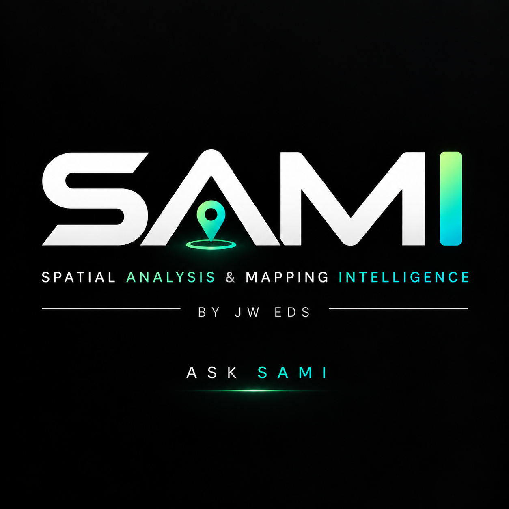

Base map · OpenStreetMap
Ask SAMISpatial intelligence · map control · trusted sources

SAMI is ready. Ask me to control the map, record site information, or find a trusted construction reference.
Try: “draw an access route” · “add a note welfare compound” · “guidance for working near a railway” · “export DXF”